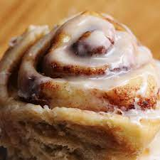

Cinnamon Roll

Description
You don't have to run to the mall to satisfy your craving for cinnamon rolls - soft and warm from the oven and drizzled with icing. We'll show you step by step how to make cinnamon rolls from scratch - from making the dough to filling, forming, baking, and icing - with loads of helpful tips along the way.
Ingredients
- Yeast dough
- Butter
- Cinnamon Sugar
- Preferential fillings
- Icing
Steps
- Prepare the yeast dough.
- Use a rolling pin to rollout the dough.
- Spread soft butter over surface.
- Sprinkle cinnamon sugar.
- Add any other fillings.
- Tug the lip of the dough up and over the filling.
- Pinch to seal the seam.
- Cut into equal pieces and place rolls into baking pan. ETC